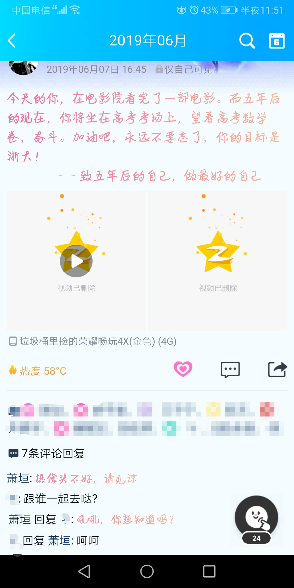

愿请诸君细细听
Author:旧城
Part 1:杂言
这是一个讲故事的板。这是一个真实的故事。
也不算是文吧，写这个东西可能更多的只是把自己心中压着的东西讲出来而已。最近事情挺多挺烦的吧，压力还是蛮大的。
也没有说想要谁谁的安慰吧，文笔不太好，也不知道这个板会开多久。尽量开了这个板子的话也就是希望能分享一些生活中的琐碎的小事吧。
也没有说想要多少人能看吧，毕竟我知道我写的东西确实很乱，也基本上是想到哪就写到哪的。
我这人啊，双子座，精分是常态，很看重生活中的细节，希望把很多很小的事放得很大，因为这个就很会和别人赌气吧，因为这个也搞砸了一段关系。跟那个人天天能见到，但是没有再说过一句话，也许这是必然的结果吧。
废话很多，可能重复的东西也很多，要是你们实在看不下去退出去就好了，就像我前面说的，只是为了说说自己的心里话而已，没有期待任何人的同期与安慰。
一首小诗，写得很烂，作为第一趴的结尾吧，下星期开始更。
《过客》
author:旧城
你我本是过客
谁又为谁而停驻
在各自的道路上
来也匆匆又去也匆匆
你我本是过客
谁又为谁而喜悲
在互相的旅途中
添一份欢又增一份愁
你我本是过客
谁又为谁而动情
在彼此的生命里
留下了各自的印记
你我又何尝是过客
亦是我为了你
Part 2:序章：情愫
这是一个真实的故事，愿请诸君细细听。
与璟的第一次相遇是在2018年的夏天，灿烂，但也许没有很盛大，因为刚开始，只有我认识他，他却不认识我。第一次综合检测，他排第二，我排第四。我一直以来把他作为目标，认为他是可望而不可及的一颗星。耀眼，又那样肆意。
说来也奇怪，我与他缘分的开始竟是在食堂。
那天，我和一位朋友风刚吃完饭准备离开，便看到风转身朝着璟的方向走去，我不知怎么的也跟着去了。就是这样，在一起走回教室的路上，我也算真正和他说上了话。
日子一天天过去，我和璟也渐渐熟络了起来。和他相处久了，也发现他没有想象中那么难以触及。星星也不是真正那么虚无又灿烂。有那么一天，我的世界因为一件事而彻底改变了。
那天晚上，在寝室里，我发烧了。浑身无力的躺在床上，喉咙干哑的要命。已是晚上十点多钟了，班主任不在，宿管阿公也不知去了哪里。同学们帮我拿了一条湿毛巾降温，我自己静静地躺在床上，看着灰黄老旧的天花板。不知道什么时候璟走进了我的寝室，爬上了我的床，在我耳边轻轻说道：“你怎么了，没事吧？”我没吭声，不是不想回答，只是真的太累了，嗓子火燎一般泛着涩。他见此状，取下了我额头上的毛巾换了通水，又给我敷上，顺势在我身边躺下。他的身子微凉，应该是吹了风的缘故。对此，我很受用。
“既然你那么难受，那我就陪你睡会儿吧。”
他说这句话的时候，我整个人都融化了。温和的皂角气息，像是融化了的小熊软糖，裹了我满心满眼。我转过身去，保住了他，任毛巾落在枕头上，他没有反抗。十一点多，我的烧渐渐退了，他摸了摸我的头，默默离开了。
我第一次对他动了心，这是我和他情愫的序章。没有想象中的曲折，但是足够盛大。
Part 3:第一章：手可摘星辰
这是一个真实的故事，愿请诸君细细听。
当一颗名为幸的流星朝着一颗名为垣的行星飞来，我知道，这是牛顿说的万有引力。星球上，一个名为旧城的人，正努力地攀着高楼，伸手想要去触碰。危楼高百尺，手可摘星辰。
星球上的事物在经历了一场“4·20”风波后，似乎都失去了活力。唯独只有旧城这个高级生物明白，这颗星，是这个星球最后的希望，即使失败了，也比错过强。虽然他所做的努力对于那遥不可及的天边来说，即使他跑得再快，也微不足道，但他不愿放弃，哪怕是一分一毫的曙光。
2019年4月20日，是一个我永远没法忘记的日子。虽然我现在还不能告诉你那天究竟发生了什么，但在那天，我真正意识到了——请珍惜眼前人。
那晚过后，谁都没有对谁说些什么，谁也没要谁的联系方式。就像是规定一样，彼此都陪伴在对方身边，陪着彼此吃饭、排队、接水、上厕所，甚至连上课时也忍不住想要转过头去看看对方在做些什么。遇到四目相对时，彼此的眼神就像那晚的夜空——灿烂而又澄澈。
“嘭！”2019年4月30日，幸降落在了垣上。一块碰撞掉了的陨石碎片朝旧城飞扑过来。在大气的摩擦下，它早已被磨平了棱角。旧城伸手想要去碰，Bing的一身，它化为了人的模样。
“你好，我叫璟。”
4月30日，我与璟成为QQ好友的第一天，正值“5·1”假期，我约着他出去看了电影。一路上的欢声笑语此刻还在脑海中翻腾着，仿佛就是昨天发生的一样，但却再也笑不出来了。记不清看的什么电影了，唯一记得的是他充满你爱的双眸和牵我的右手。微热的手心和初夏的凉融合在一起，恰到好处。这些，虽然都已经回不去了，但那段时光，我会永远铭记。
“我喜欢你。”
5月1日晚上，我和他表白了，第一次和他说晚安，第一次和他说爱你，第一次给他发小气球，成为了情侣。还记得那夜的风，微凉，夹着我的爱意，吹进了他的心里。脸上按捺不住的笑容好似那上弦月的弯钩。
我伸手在下了那颗星，照亮前方的路，人生不再是迷途。
Part 3:第二章：耿耿于怀
这是一个真实的故事，愿请诸君细细听。
风从指间划过，手指说，这是温柔地路过；你从我身边走过，我说，这是一辈子暖暖的好。璟犹如天外来物一般降落得如此突然，垣的大地为之一震，也添了几分色彩。自从璟来到旧城的身边，旧城再也无心在这个世界赏花，其他的事物，对旧城而言，逐渐变得透明了。
“5·1”假期一过，同学们又回到了忙碌的学习之中，可对我而言，就算再苦再累，和璟对视一秒，哪怕只是看他一眼，都是一种幸福。
“他很优秀，所以我要更加努力才能陪得上他。”我给自己鼓气，暗暗下定决心一定要超过他，不然我拿什么征服他。
学习的时光总是匆忙的，以至于两人都没有察觉到，时间不知不觉已经到了5月20日。也许是这段感情太突然了，彼此都没有给对方准备礼物。我管这叫正好。
“5·20”的晚上，两个都不约而同地走出寝室，想给对方道个歉。
“既然这样，那等高中部考试那会儿，我们放假，我请你看场电影吧。就当是弥补你给你的了。”他的指尖带着余温伴着初夏的风抚过我的脸颊，说道。手指处着我的脸，奏出了爱的交响曲。
“好，那我也要请你看……”
“嘘~我懂，别说话。”
只见璟的脸理我越来越近，鼻息的声音越来越清晰，温唇的热汽不断朝耳边扑来，我的心越跳越快，血液涨红了脸。他轻吻了一口我的脸颊，贴着我的耳道了声晚安，转身向寝室走去。
“璟，晚安……”
此时走廊上只剩下我一人呆呆地站在原地，心中按捺不住的喜悦久久难以平复。
过了许久，只听到阿公叫道：“喂！站那傻笑啥呢，你看看都几点了，还不会寝室睡觉？”，才回过神来，那一晚，我躺在床上辗转反侧，彻夜难眠。甚至引来了下铺兄弟来自第二天早上的投诉：“昨天晚上干嘛呢你，翻来翻去的，床震的呀，让不让人睡觉啦，你看看我这黑眼圈。”那时的我，道歉的样子，极其狼狈。
2019年6月7日，璟请我看了第一场电影——《最好的我们》。为了玩得开心点，我们叫上了几个朋友，那时候风也在，但当时他还不知道我和璟之间的事。在电影院的电玩城里，璟和风有事打拳皇又是开赛车的，笑得如此开心，而我大部分时间却只能在旁边看着，心里有点酸酸的。我时不时拉拉他的衣角，想提醒他注意着点，可他却丝毫没有收敛的意思，可能这就是他他吧——放荡不羁的一匹马——我更愿意这样来形容他。
电影开场了，我选了一张坐在璟旁边的票，看电影的同时也看他。每当背景音乐唱到“那是耿耿于怀伤疤未结痂”时，心里都会莫名咯噔一下，仿佛被什么东西触动到了，立马拉住他的手，心里暗暗问到：
“你应该不会一声不吭的就离我而去的吧？”
璟似乎猜到了我的心思，他紧紧地握住了我的手，侧过身来，眼神坚定地看着我，仿佛在说：
“放心，我在。”
那一刻，我在他的眼里看到了光芒和满满的安全感。我知道，璟不会像“4·20”的某人一样突然离开我的，心情也慢慢平复了下来，心满意足的笑了。
电影散场，已是黄昏。夕阳斜下，我牵着璟的手，背影拉得格外的长，朝着家的方向。两个人的步调，两个人的心跳，渐渐变得一致。
“如果我们因为某些原因分开了，你会等我七年吗？”，我问道。
“我想，我会。”，他答道。
“青春如果是拿来浪费的话，我觉得，我把青春浪费在你的身上一点都不亏。”
“我也是。”
虽然故事的结局没有想象中的美好，但耿耿和余淮种下的树见证了他们的爱情，初夏的那张电影票也见证的旧城和璟的爱情，即使是现在想起，也是那样的耿耿，于怀……
Part 3:第三章：美景良“辰”（上）
这是一个真实的故事，愿请诸君细细听。（本篇对现实有较大的改动）
浪花卷过沙滩，奏出夏的乐章；海鸥掠过海面，带来一丝清凉。无问东西，愿用今朝，换取一夕，美景良“辰”与君游。
转眼来到了期末，班里的同学都在努力地复习备考，当然我也没有落下，发誓一定要在期末考试时超过璟。而璟却是一脸胸有成竹的样子，似乎早已胜券在握。
“喂，你能不能不要一脸无所事事的样子啊。好歹你也复习一下，让我输得体面点嘛。”我向他撒起娇来，担心自己比不过他。
“首先，我不叫喂，我叫xx辰。还有啊，你真的这么在意成绩吗？你期末要是考过我了，我就带你去青岛看海。”
“嗯……好。”嘴上虽然答应了，心里却纠结着怎么让父母答应。
紧张的期末考在同学们的奋笔疾书下终于结束了。在各科老师纷纷发来正确答案时，同学们一边对着答案，一边算着分，比谁的成绩更好，每个人的心中都有那么一根绷紧的弦，毕竟这与奖学金紧紧的联系在一起。最终排名公布了，出乎意料的是，我在班级排第2，璟在班里排第4，我拿了一万奖学金，他却只拿了六千。
“呵，失误了。好了好了，这次就当时我让着你了，暑假班上完，记得来找我哦！”
放学那会儿，璟跑出了校门，消失得无影无踪。我在后面偷偷的笑了：“还说我太在意成绩了，明明自己比我还在意嘛。你看，这不没脸见人了嘛。”
“唉？我爸怎么还没来？”平时接送十分准时的父亲现在也不见了踪影。大约在门口等了十来分钟，我爸才一副姗姗来迟的样子，朝我走来。
2019年7月，怀着对未知的物理和化学的恐惧，我们升上了八年级。璟成为了物理课代表，我成为了班主任的化学课代表。知道前面有一场旅行等着我，我的心早已不在学习上。就当我以为这个暑假班就要这么浑浑噩噩地混过一个月时，才体验了不到两个星期的八年级生活，我们放了一个比以往长不知道多少倍的暑假。
“内个，爸……这个暑假……嗯……我想和……和我同学……去……去山东玩。”回到家后，我犹犹豫豫地向我爸说道，心中已经做好了被拒绝的打算。
“没事，去吧，正好这个暑假挺长的，我和你妈也打算度个假。”爸的脸上扬起笑意，十分轻松地回答道。
“真的吗？！好耶！”
平日里十分严厉的父亲在此刻却变得如此温和，温和得让我有点不敢相信他所说的话。这个暑假似乎也是为了我和璟设计的。这一切的一切，就像是一场梦，来得如此轻易，但是却又那么的真实。我想，这一定是上天的安排。老天爷他知道了我和璟之间的事，可以想要成全我俩吧。
“你知道吗？我爸妈同意啦！我都把我爸可能问的所有问题在脑袋里面都构思好了，结果他什么也没问就同意了！真的是太出乎意料了！”我兴冲冲地与璟分享这个好消息。激动的心情化成一个个字符，喷涌而出。QQ小窗上跳跃的文字，抑制不住的兴奋，满屏满屏都是我给他发的消息，但是即便是如此也不能完全表达出我心中的喜悦之情。
“嗯。”
面对我给他发的一连串的消息，他只是这样淡淡地回道。
“？你什么意思啊？难道没有什么想说的吗？”
看到这一个“嗯”字，无疑是往我头上浇了盆冷水，内心燃起的火，就这样被扑灭。
璟没有回我那句话，只是说让我收拾收拾行李，准备出发。
“你这态度，我可不想去了啊。”
这句话一杯我打上了聊天框，但还是匆匆地删掉，用了“嗯”来代替。后来我问我爸那天为什么来接那么晚时，我才得知，原来那天璟早早地跑出校门不是为了逃避，而是找我爸讨论出游的事情了，璟软磨硬泡了好久，我爸才答应。了解到实情以后，我庆幸自己没有赌气把那句话发出去，心中对璟也有了愧疚感。没想到平时吊儿郎当的一个人，在这种事情上居然会如此上心。
Part 3:第三章：美景良“辰”（下）
2019年8月1日，两家人在协商一致后，终于出发了。对弈第一次做飞机的我来说，机场的一切都是如此的新鲜。相比于璟而言，我显得格外的吵闹，在机场里不断地跑来跑去，以至于上了飞机以后早已无了精力。刚起飞那会儿，我又是耳鸣，又是晕机的，可被折磨惨了。吃过晕机药后，我的头靠着他的肩，他的头贴着我的头，伴着他温和的呼吸声，我睡着了。
“对不起啊，我错怪你了……”璟对我说，这是我的一句梦话。
几经周折，8月2日下午，我们到达了山东青岛。在到旅馆订房间的时候，双方家长因为我和璟应不应该睡一间房吵起来了，经过长达一盘王者的争辩，家长们妥协了，让我们单独睡一间房。虽然说是双人房，却不是分开的两张床，而是一张双人床，我们谁也没和父母说。第一晚，我和璟相拥而眠，我的胸贴着他的胸，感受着彼此的心跳，他的脚搭着我的脚，亲密无间，把双人床挤出了单人床的感觉。
“喂，醒醒啦，说好了今天要一起去看日出的呀！”早上4点，璟早早地洗完漱，趴到我耳边，用极其温柔的语气说道。
“嗯~不嘛~这才几点啊~”[迫害社员活动]
“宝贝，乖，再不起太阳就要晒屁股啦，那还看什么日出啊？”
“屁股……啊……起不来啊……”
“快，快起来，你爸来了！”
“嗯？哪里？在哪里？”听到这句话，我瞬间穿好了衣服裤子，从床上爬起来，却始终没有见到我爸的身影。
“不是在这嘛。”璟指了指他自己。
“啊~幼稚鬼~”
“起都起了，快去洗漱吧。”
“哦。”
到沙滩上时，天色微亮，我和璟沿着海岸线坐下，脚下的沙，松软细腻，迎面的风，夹杂着大海的气息。海上笼着一层薄薄的水汽，显得更加深不可测。对于内陆的孩子而言，关于大海的一切都是稀奇而又神秘的。
“你说，海的那边是什么啊？”我问道。
“嗯……或许是很远很远的未来吧……”
“他们说，一起看过日出的情侣都会走到最后的。”
“嗯。那我在未来等你。”
“好，我现在就去！”
就这样一问一答，我们迎来了清晨的第一缕阳光。水汽渐渐散去，大海显现出了它真正的面容。阳光透过云层洒在璟的身上，照得大地一半是光明，一半是黑暗……
8月5日，我们乘飞机回了家，结束了我们的旅程。这场旅行，虽有美中不足，但眼前有美景，身边有良“辰”，不负这夏日海风里，一夕美景良“辰”。
点我看车。SP 1：醉酒后（与正文内容无关）
好巧不巧的是，我们去的时候刚好遇上了台风，下午，天色逐渐灰沉了下来，泛起了小雨。海滩被封闭了，无奈之下，我们只好另寻去处。刚好，我们逢上了青岛当地的啤酒节，冒着雨，我们赶了过去。但我不胜酒力，没喝几口，脸就涨得通红，开始泛起迷糊，走路跌跌撞撞。见此，璟的父母让璟先领着我回宾馆。一路上是边走边吐啊，吐得璟和自己身上一股怪味，好不容易才回到了宾馆。
璟难以忍受呕吐物散发出的气味，将衣服裤子一件件脱下。我的衣服上早已是呕吐物留下的黄色污渍，他将我的也脱下，扔进了洗衣机。璟搀着我进了于是，自己又匆匆忙忙地跑了出去，翻箱倒柜地在房间里好像在找些什么。许久，他才拿着沐浴露和别的什么东西遮遮掩掩地走了进来。
开水、调温、淋浴。水顺着肌肤流下，滴答落在地板上，溅起一层又一层的水花。两个boy就彼此这样裸着身子，坦诚相见。热汽笼罩着整个房间，气氛开始朦胧了起来。沐浴露搓出了泡沫，他细腻的指尖在我稚嫩的肌肤上肆意地游动着，灵动而轻快。温水不停拍打着我的身躯，我的视线不再像醉酒时那么模糊不清，逐渐变得清晰，意识也慢慢清醒了过来。
“你……我……”看到眼前的景象，我有些不知所措。看着他诱人的身体曲线，几近完美的腹肌，我的眼睛被他直勾勾地吸引着，心跳不自觉地加速。像是打翻的红墨水一样，绯色一瞬间从我的脸颊蔓延到了耳根。与醉酒时的脸红截然不同，这种红，红得更加的纯粹。
“别说话，去体会。”他只是淡淡地说道。与我相比，他显得更加的从容。自然得让我感觉他甚至是提前计划好的，而且是“多次犯罪”。
关水、拧盖、倾倒。沐浴露从我的肩上，沿着肌体滑下。借着酒劲，我猛地把璟往墙上一推，他顺着我的意愿连连后退。双唇在颈间来回吮吸着——舌头肆意地舔着胸部——畅快地享用着他结实的腹肌——然后越来越往下，越靠越近，心中那份冲动难以克制，心仿佛就要跳到天边去了，肾上腺素不受控地激增，幸福的多巴胺告诉我这是兴奋的感觉——从林间穿过，抵达目的地。两个人就这样干柴烈火的缠绵在一起。
他把我一把推开，随后又忽的抓住我的肩膀，我整个人背对着他。他的指甲沿着我清晰可见的脊骨滑下。尽管有些敏感，但却又无力反抗，想要逃却又无法逃脱他的掌控。顺着缝隙，一根、两根、三根。我再也无法忍受这种疼痛，叫出了声来。
听见我的这一声，他脸上竟有些歉意。
突然，门外传来了开门的声音。毫无疑问，是父母回来了。他急忙整理好衣物，出门前去查看情况，我慌忙地冲洗着身上的沐浴露。
“我家宝在里面洗澡呢？”
那是我母亲的声音。这时她的嗓音似乎极有穿透力地击在了我的心上。
“是的，阿姨。”
“那他酒醒了没啊？”
“嗯，现在已经好多了。”
他的声音有些颤抖，不禁透露出一丝慌张。收到求救信号的我，匆忙地穿好衣服从浴室中走了出来。
“瞎讲，他的脸明明比之前还嘛。你照顾着点他，现在就叫他去洗澡，万一在里面摔了怎么办啊？”
母亲的唠叨使我有些厌烦，但我知道，这里面是对我满满的爱。
“好啦好啦妈，我长这么大了又不是没点分寸。”
不知为何，说这句话时心里竟有点刺痛感。
“时候不早了，您也早点回去睡吧。”
“好吧好吧，那你注意着点。”
“早知道就不带他去喝酒了。”她小声嘟囔着。
“知道了，妈。”我和璟几乎异口同声地说道。
待母亲离开后我们相视一笑，躺倒在了床上……